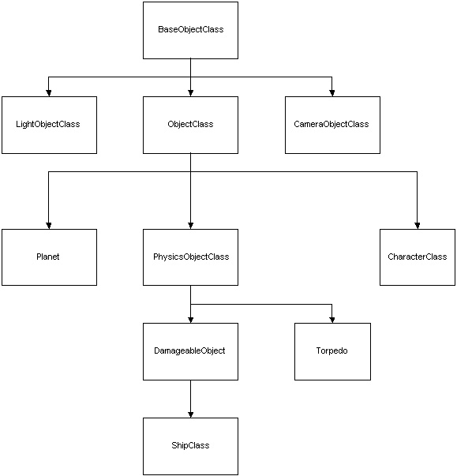

Basic Concepts in Bridge Commander
This section describes some of the basic concepts in Bridge Commander -- basically, the way the world "works". Other documents provide much more detail on the concepts presented here, but this is a good starting point for learning about the internals of Bridge Commander.
Scripts
Python scripts control a lot of what happens in Bridge Commander. These scripts are located in the "scripts" subdirectory in the Bridge Commander directory. There are a number of subdirectories in here -- some of the more important ones are:
- Maelstrom: these are the scripts for the single-player campaign in Bridge Commander. You can use these mission scripts as a reference or guide.
- ships: this contains scripts that define the ships in the game. The Hardpoints subdirectory contains specific information about the systems that make up each ship.
- Systems: these are scripts that describe the space regions of the game.
You can modify these scripts, or create new ones, to change the way Bridge Commander behaves.
Game, Episode, Mission
Bridge Commander "campaigns" are broken down into smaller pieces. A Game contains an entire campaign, and contains any number of episodes. An Episode is, in turn, composed of any number of Missions. Games, Episodes, and Missions are represented by scripts -- if you look in the Maelstrom subdirectory in scripts, you'll see a file called Maelstrom.py. This is the Game script for the single-player campaign in Bridge Commander. There are subdirectories for each episode of the game (each containing an Episode script), and subdirectories in each episode for missions (which contain Mission scripts).
Objects and Sets
Any sort of object in the world is considered to be of type ObjectClass (henceforth "objects") -- basically, it's the root class for most object types in the game world. Objects are usually contained in a "set" (class SetClass). A set is an environment in the game world -- for example, the bridge of the Dauntless, the region of space called "Biranu 2", or the "warp set", where ships go when they are warping. Sets can contain any number of objects -- however, the objects must be uniquely named (if they have a name). Objects can be moved to different sets at any time, but can only exist in one set at a time.
All of the sets in the game are accessed through the set manager. Objects in the game are accessed by getting them from their particular set, or by their unique ID.
A typical object and set list in Bridge Commander might look something like this:
- The bridge, containing:
- The bridge object
- The viewscreen object
- 5 crew member character objects
- A camera
- The "Biranu 2" space region, containing:
- A ship, named the "Dauntless"
- A ship, named "Freighter"
- A planet
- A sun
- 6 torpedoes
- A camera
- The "freighter bridge" set, containing:
- Object representing the bridge of the freighter
- A character named "freighter captain"
- A camera
More specific object types
Many classes inherit from ObjectClass, to implement more specific behavior for an object. In particular, objects in space and objects on a bridge follow separate inheritance paths. Below is a diagram showing some of the more important inheritance paths from ObjectClass.

- BaseObjectClass is very similar to ObjectClass, except that BaseObjectClass objects do not have to have a 3D model.
- LightObjectClass is used to place lights in the world. Lights are placed in sets just like other objects.
- CameraObjectClass is used for cameras in the game world. Cameras are also placed in sets just like other objects.
- PhysicsObjectClass represents objects that have world physics applied to them. These can accelerate, turn, and otherwise act like physical objects. They can also be assigned AI.
- CharacterClass is used for animated characters, such as your bridge crew, or people on the viewscreen.
- Planet is a special case class, used for planets, since they don't need to obey the game physics.
- DamageableObjects can have real-time damage applied to them. Most space objects fall into this category -- ships, debris, asteroids, etc.
- Torpedo is another special case class because, while they need to obey the game physics, torpedoes do not need to be damageable.
- ShipClass is used for all ship and ship-like objects, including stations. Ships can contain any number of subsystems, representing the different components of the ship.
Controlling Mission Flow
A typical mission is not just a group of ships in sets. The mission must react to events in the game world and the player's actions, and trigger other things when appropriate. There are several mechanisms in Bridge Commander used to make things happen in the game world.
- Events can be sent at any time to objects. If the object is set to handle that particular event type, then it will perform some action based on the event. You can set up your own specialized handlers and event types for mission-specific behavior. Also, user interface objects send events, so you can set up handlers that run when a particular button is pressed.
- Timers can be set to send events at certain times. You can also specify that the timer should be repeating, and how many times it should trigger, if desired.
- Sequences can be triggered at any time. Sequences are an easy way to string together pieces of script or actions using timers. For example, mission briefings in Bridge Commander are simply sequences of "say line" actions. As another example, you could create a sequence that plays a voice line, then 15 seconds later, calls a script action to create some ships, and finally, one minute after that, calls another script action to make those ships warp out of the system.
- Conditions can trigger when certain requirements are met ("in range", "attacked", "critical system damaged", etc.)
- Proximities will send an event if other objects enter or exit a specified radius. You can use this to trigger dialogue when the player reaches a certain distance from a planet, for example.
Missions will usually set up some of these mechanisms during initialization, and set up more during the course of a mission.
Mission example
Missions use a combination of the above mechanisms to control gameflow, and to make the mission "come alive." Here's an example of a very simple mission, and how it uses these mechanisms.
The mission involves having the player travel to Biranu 2. When the player arrives at Biranu 2, a dialogue sequence plays that talks about some strange readings coming from the planet. If the player comes close to the planet, four Cardassian Galors warp in and fight the player. When each Galor is damaged sufficiently, it warps out of the region. When all of the Galors have left, the player wins the mission.
To make this happen, you might implement the following pseudocode:
- Set up an event handler for the "entered set" event, which is sent when an object enters a set. In this handler, if the object is the player, and the set is Biranu 2, then create and play the sequence of actions that explains the strange readings.
- Set up a proximity on the planet object, with range of 500 game units. Set up an event handler for this proximity that will create the four Galors when the player triggers it.
- When the Galors are created, make a condition "condition system below", which will trigger when their hull is below 50% and cause them to warp out.
- Set up an event handler for the "exited set" event. In this handler, if the object is one of the Galors, add to a counter (the Galor has run away). If the number of Galors that has run away is 4, then create and play a sequence that tells the player they've won the mission.
Ship Internals
Each ship in the game is made up of a number of different subsystems. Not every ship is required to have every subsystem, but most ships contain a large number of subsystems. These subsystems have attributes particular to them, and range from the very simple, like a hull, to complicated, like a phaser bank.
Types of subsystems:
- Hulls
- Sensors
- Impulse engines
- Warp engines
- Power systems
- Shields
- Repair systems
- Cloaking systems
- Weapon systems (containing phasers, torpedoes, pulse weapons/disruptors, tractor beams)
- Weapons (the individual phasers, torps, disruptors, etc.)
Created on ... January 30, 2002